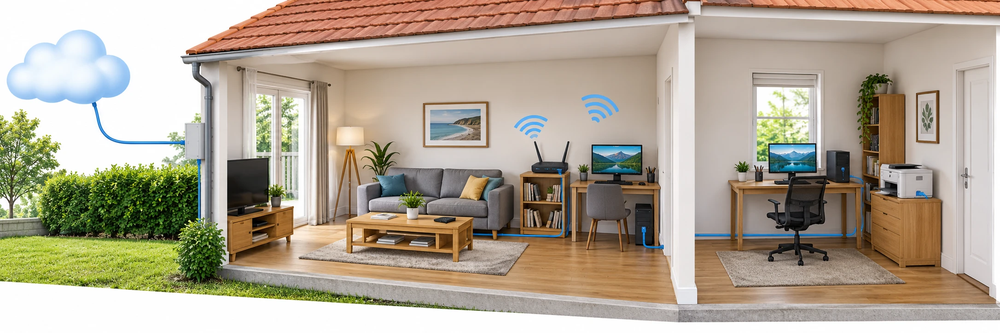

OBSERVER · EXPÉRIMENTER · EXPLIQUER
Comment fonctionne le réseau de la maison
On reprend le plan de la maison. Chaque équipement possède une adresse locale. Dans ce modèle les adresses commencent par 192.168.1 et le dernier nombre doit être différent pour chaque équipement.

✎ Garde ta feuille à côté de toi.Ordinateur : manipulations et mesures simulées. Papier : relevés, réponses, calculs et croquis. Matériel réel : essai complémentaire si disponible.
Des observations pour expliquer
- Q1 à Q4 : suis ta fiche. Conserve les réglages, les relevés et les explications sur papier.
Appuie ton explication sur une valeur, un changement observé ou une comparaison. Distingue ce que montre le modèle et ce qui reste à vérifier.